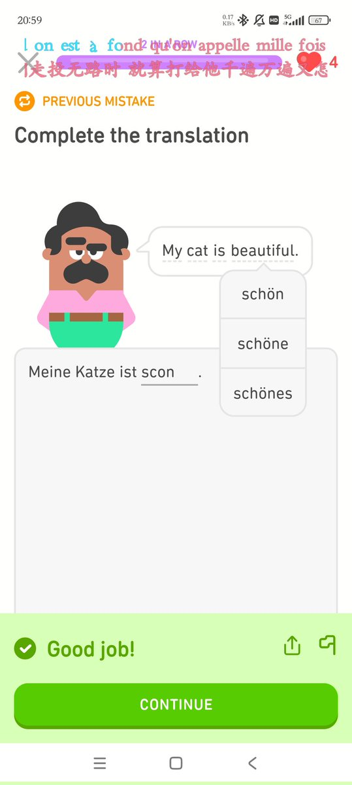

大狐帝国史官邹智萱（笔名段歌文）
@Rococo90933671
@pandeng1234 我也觉得自己太失败了，外界灌输给我的一切让我认同的、说是我应该得到的东西我好像什么都没争取到，学业也好，爱情也好……明明那么多机会我却不敢去抓……不破除这种认同，我注定只能活得郁郁寡欢。唉，还是不再一遍遍重复这些伤心事了，分享一个多邻国bug，我这个单词明明拼错了它算我对了：

阿蕾奇诺女王的狗
@pandeng1234
听说前女友好多年前毕业拿教师资格证就去做化学老师了，有时候觉得粉红骂的确实是对的，我糟糕的人生或许都是我自己造成的，我从未为自己的人生努力过，我配不上她，等到30岁生日就结束吧，没意思。